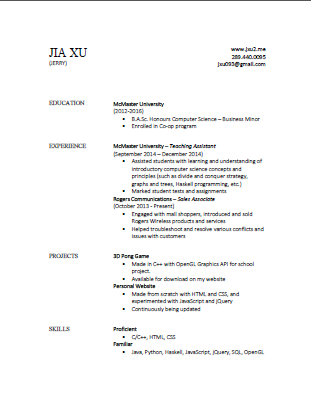
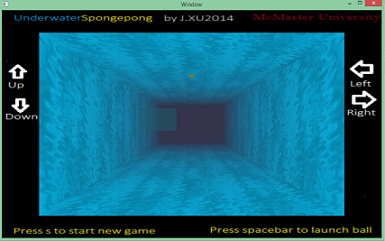

Hi. My name is Jia L. Xu, but everyone knows me as Jerry. I'm a 3rd year Computer Science undergrad at McMaster University, and welcome to my page.
Here, you can find out about ME, look at my resume, get my contact information, or check out the side projects I'm working on or have completed.
Simply keep scrolling or click the navigation links above to browse through the page. If you have any feedback about this website, please let me know.
Thanks for looking!
.Resume

Click to view it on Google Drive
.Projects
3D Underwater Pong Game

Implemented in C++ using OpenGL graphics API.
Other Personal Website
Made to test out different layout designs and javascript/jQuery
.Contact
Phone: (289) 440 0095
E-mail: jxu0093 @ gmail.com
E-mail: jxu0093 @ gmail.com